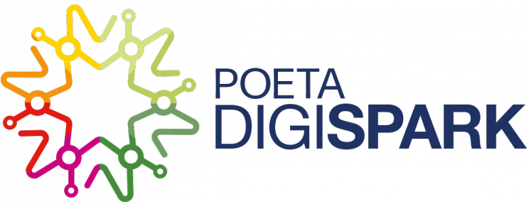

Son centros tecnológicos comunitarios que tienen por objetivos promover el acceso y la capacitación en el uso de las Tecnologías de la Información y la Comunicación, y la preparación para la inclusión laboral de poblaciones en situación de vulnerabilidad social. Se encuentran en las ciudades de Santa Fe, Rosario, Córdoba, Mar del Plata, La Plata, Mendoza y CABA.
Dentro de esos Centros se desarrolla el proyecto POETA Digispark a través de distintas capacitaciones:
